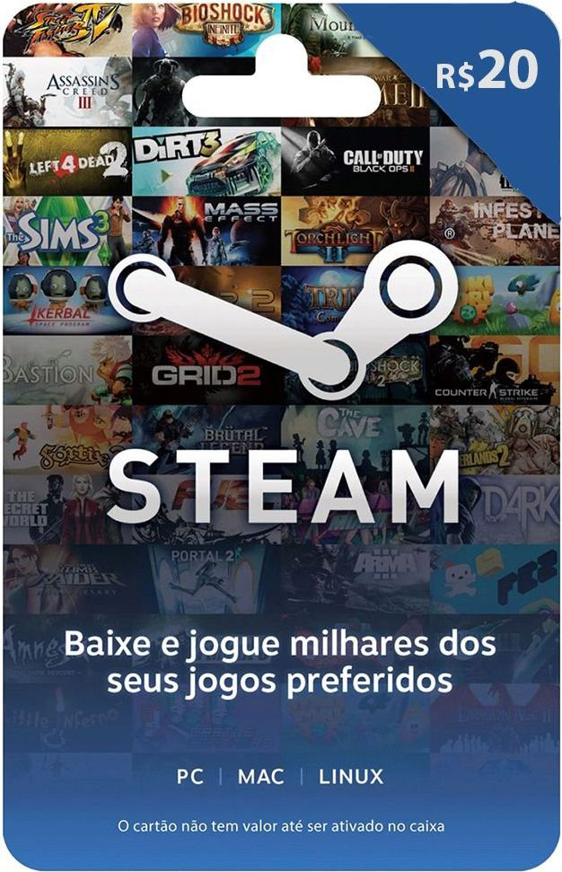
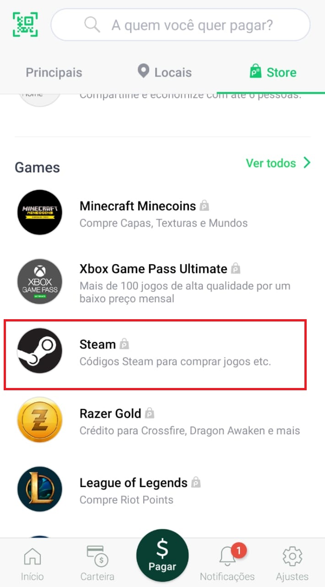
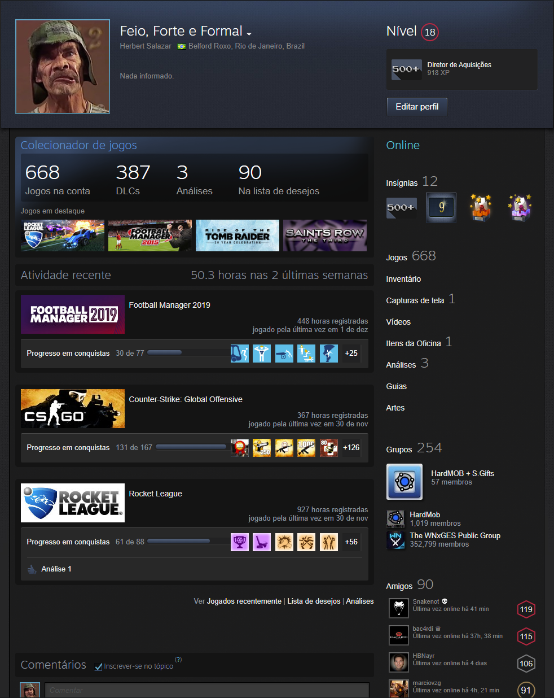

Presente que me deixaria muito feliz! Cartão de Presente da Steam, como os das imagens abaixo!

O cartão de 20 reais custa aproximadamente 22 reais. O de 30, 32 reais. Portanto, compre o de 20 reais que ficarei super agradecido
PELO AMOR DE DEUS, observe que o cartão tem que ser especificamente dessa loja, chamada STEAM. Caso não saiba o que é, é uma loja virtual de jogos e softwares. Atente para essa logo deles (como nas imagens abaixo), no cartão deve ter algo desta logo e escrito Steam. O cartão em si pode ter um design diferente das primeiras imagens, mas essa logomarca deles vai estar lá de alguma forma!!
Eu já vi este cartão no Extra, no Carrefour e nas Lojas Americanas. Então não é difícil de encontrar. Mas caso não encontre, aqui vai umas soluções legais. Conhece o PicPay? Se não conhece, clica na imagem do PicPay e dá uma olhadinha no que é:
Ao baixar o aplicativo, você pode clicar em "Pagar" na parte inferior central da tela e depois escolher "Store" no canto superior direito. Lá terá a opção Steam, que funciona EXATAMENTE como o cartão presente

E então é só anotar o código que irá receber (pode imprimir, também) e me passar no dia. Aí eu recomendo que use a criatividade, cole o código em um cartão postal, um pôster do Mengão, sei lá, e me escreva uma parada bem criativa, kkkk. Afinal, nerds também são emotivos as vezes, não é verdade?
Agora, se você for um Ás da computação, pode me comprar o cartão de presente e me enviar como presente diretamente na Steam! para isso, clique aqui para ir para a página de cartões de presente da Steam.
Será necessário criar uma conta steam, me adicionar lá, comprar o presente e me enviar o presente por lá. Nunca fiz esse procedimento, então não sei se dá pra esperar pra enviar depois (tenho quase certeza que sim). Ah, e se quiser usar a criatividade pra falar que é você na hora lá, pode usar. Um pôster do Mengão falando que eu ganhei um presente na Steam faria eu ficar bem feliz! rsrs.
Essa aí embaixo é minha conta da Steam, me adiciona lá pra gente jogar uns joguinhos!

É isso, qualquer dúvida, clique aqui para criar um email temporário e descartável e me mande um email: herbertsds.ufrj@gmail.com. Eu vejo no mesmo dia e coloco a resposta nessa página aqui, ok?
MUITO OBRIGADO pela paciência e por suportar meu atrevimento de escrever tanto assim, rs. Que Deus abençoe sua semana! Fique com uma imagem aleatória de um cachorro e de um gato.
PS: Obrigado também a você que nem é meu amigo oculto mas entrou aqui por curiosidade. Também desejo a ti uma semana abençoada!